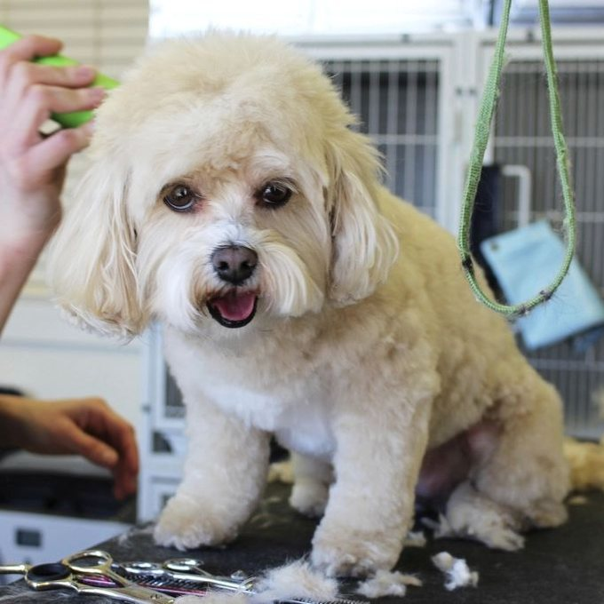

Fenerbahçe, Kadıköy
Pet KuaförBeyaz
Kedi ve köpekleriniz için köpüklü banyo, tıraş, tırnak ve kulak bakımı. Randevuyla çalışıyoruz; dostunuz sırada beklemesin.
Pazartesi–Cumartesi 10:00–18:30

Baloncuklara dokunun; seçtikleriniz randevu planına taşınır.
Henüz seçim yok
Bakım masasında neler var?
Her dostun tüyü, derisi ve sabrı farklı. Neye ihtiyacı olduğunu birlikte seçiyoruz; en çok istenenler şunlar.
Banyo ve tarama
Tüy tipine ve deriye uygun şampuanla yıkama, bol durulama, tüy diplerine kadar kurutma ve tarama.
Tıraş ve model kesim
Irk standardına ya da sizin tarifinize göre. Aklınızdaki kesimin bir fotoğrafını göndermeniz yeter.
Tırnak kesimi
Sakin bir tutuşla, azar azar kısaltma. Uzun tırnak yürüyüşü ve duruşu etkileyebilir.
Kulak ve göz çevresi
Dış kulağın ve göz çevresinin nazikçe temizlenmesi, göz altı izlerinin alınması.
Tüy açma
Keçeleşmiş tüylerin sabırla açılması. Çok sıkı keçede dostunuz için en rahat yolu birlikte seçeriz.
Bakım ürünleri
Şampuan, tarak, fırça, tasma gibi ihtiyaçlar için sorun; elimizde olanı söyleyelim.
Bir bakım çoğu zaman böyle ilerler
Sıra ve işlemler dostunuzun ihtiyacına göre değişir; aşağıdaki, en yaygın akış.
- TanışmaTüyüne, derisine ve patilerine birlikte bakılır; isteğiniz ve dikkat edilmesi gerekenler konuşulur.
- Ön taramaDökülen tüyler alınır, varsa keçeler belirlenir.
- BanyoBol köpük ve iyice durulama; göz ve kulak çevresine özen.
- KurutmaHavlu ve fönle tüy diplerine kadar kurutma, kuruturken tarama.
- KesimTıraş, model kesim ya da yalnız yüz, pati ve uç düzeltmesi.
- Son dokunuşlarTırnak, kulak ve göz çevresi.
- KavuşmaBakım sonrası dikkat edilecek bir şey varsa konuşulur; dostunuz tertemiz evine döner.
Bakımdan önce ve sonra bilmeniz gerekenler için Bakıma hazırlık sayfasına göz atın.
Bakım malzemesi mi lazım? Sorun.
Pet Kuaför Beyaz, Google'da evcil hayvan malzemeleri mağazası olarak da yer alıyor. Aradığınız bir ürün varsa önceden yazın; o gün elimizde olup olmadığını ve dostunuza uygun olanı söyleyelim.
- Şampuan ve bakım ürünleri
- Tarak ve fırçalar
- Tasma ve kayışlar
- Mama ve ödül maması
- Oyuncaklar
- Diğer ihtiyaçlar
Ürün çeşitleri değişebilir; marka ve stok bilgisini WhatsApp'tan sorabilirsiniz.
Sık sorulanlar
Randevu gerekli mi?
Evet, dostunuzun beklememesi için randevuyla çalışıyoruz. Gün ve saat için WhatsApp'tan yazabilir ya da bakım planı sayfasında mesajınızı hazırlayabilirsiniz.
Bakım ne kadar sürer?
Irka, boya ve tüy durumuna göre değişir; keçe varsa uzayabilir. Yazdığınızda yaklaşık süreyi söyleriz.
Ücretler neye göre değişiyor?
Dostunuzun boyuna, tüy tipine, tüyün o anki durumuna ve istediğiniz işlemlere göre. Bilgi için arayın ya da yazın.
Kediler için de bakım var mı?
Kedi bakımı için de bize yazın; dostunuzun tüyüne ve mizacına göre neler yapılabileceğini konuşalım.
Pazar günü açık mısınız?
Pazar kapalıyız. Pazartesi'den Cumartesi'ye 10:00–18:30 arası açığız.
Bakımdan önce ne yapmalıyım?
Kısa bir yürüyüş, sağlık durumuyla ilgili bilgiler ve istediğiniz kesimin bir fotoğrafı işi kolaylaştırır. Ayrıntılı liste Bakıma hazırlık sayfasında.
Fenerbahçe'de, Fuatpaşa Caddesi'nde
Fenerbahçe, Fuatpaşa Cd. Deniz Apartmanı No: 22/7, 34726 Kadıköy/İstanbulPazartesi–Cumartesi 10:00–18:30